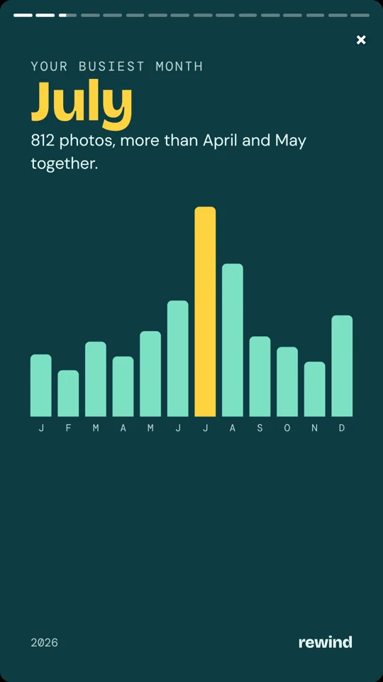
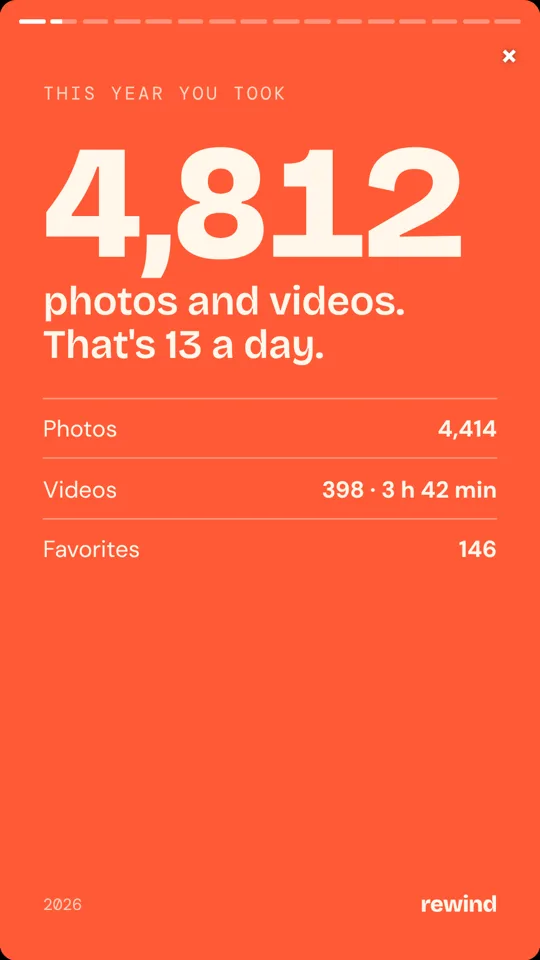
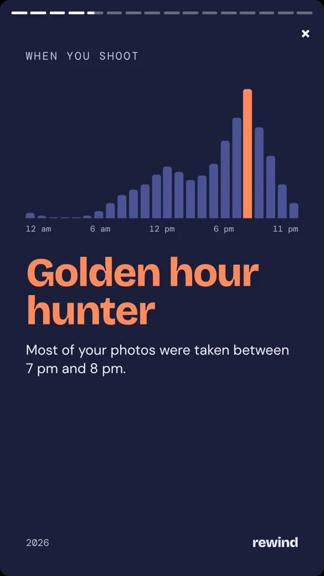
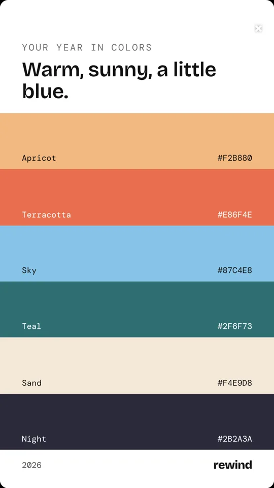
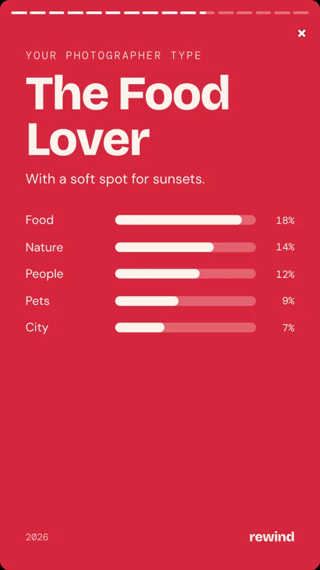
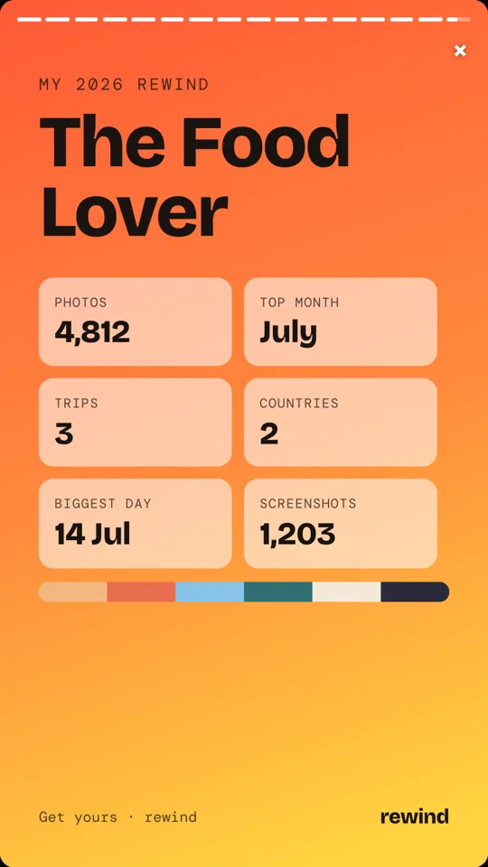

ExpérimentationsExperiments
Des petits prototypes et clones de jeux classiques, faits pour apprendre et tester des idées.Small prototypes and clones of classic games, made to learn and try out ideas.
Building what I enjoy using.
Des applis, des sites, des outils et des jeux vidéo, sous le nom de Kozuma. De l'idée aux corrections de bugs, je m'occupe de tout, seul, depuis la France.Apps, websites, tools and video games, under the name Kozuma. From the idea to the bug fixes, I do it all myself, from France.
 Rewind
RewindTon année en photos, en stories. Rien ne quitte ton téléphone.Your year in photos, as story cards. Nothing leaves your phone.






Cartes d'exemple : ces chiffres ne sont pas de vrais résultats.Sample cards: these figures are not real results.
Des tier lists d'anime avec du contexte, filtré selon ton avancée dans l'histoire. Classe tout, ne spoile rien.Anime tier lists with context, filtered to where you are in the story. Rank everything, spoil nothing.
Des petits prototypes et clones de jeux classiques, faits pour apprendre et tester des idées.Small prototypes and clones of classic games, made to learn and try out ideas.
Kozuma, c'est un studio d'une seule personne : j'écris le code, je réponds à tes mails et je corrige les bugs.Kozuma is a one-person studio: I write the code, answer your emails and fix the bugs.
Tout part d'une question simple : est-ce que ma famille et mes amis aimeraient s'en servir ? Si la réponse est non, ça ne sort pas.Everything starts with a simple question: would my family and friends enjoy using this? If not, it doesn't ship.
Je fabrique chaque projet à la maison, en France, à son rythme. Pas d'investisseurs, pas de pression, juste du temps et du soin.I build every project at home in France, at its own pace. No investors, no pressure, just time and care.
Une idée, un bug, un petit mot : écris-moi et je te réponds. Tes retours décident de la suite.An idea, a bug, a kind word: write to me and I'll reply. Your feedback shapes what comes next.
Un retour, un bug, un partenariat ou juste bonjour.Feedback, bugs, partnerships or just hello.
contact@kozuma.studio